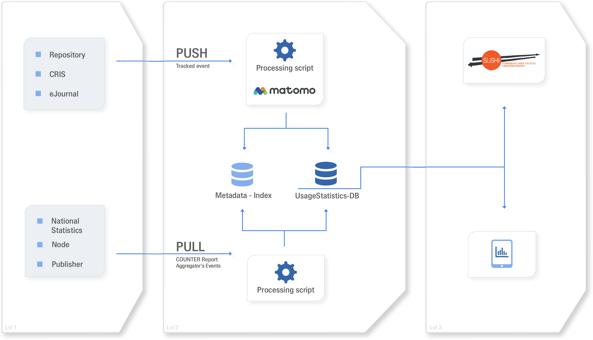

Usage Counts Service Specification
OpenAIRE Analytics platform
OpenAIRE’s usage counts service uses the Matomo Open Source Analytics platform to track usage activity. Matomo is a platform for web traffic analysis which started in 2007 and has recently become the world's leading open-source analytics platform. Matomo provides users with valuable insights into their website traffic and visitors activity. The main advantage of Matomo against other analytics platforms, e.g. Google Analytics, is its approach to ownership of collected data. All information gathered, is available and controlled only by Matomo users and by default is not shared with any third parties.
Matomo is self-hosted, so the platform is stored on user’s infrastructure and all data is tracked inside the user’s database. Thus, the user keeps full data ownership and can control who has access. It provides greater flexibility, as it allows the collection and storage of PII (Personally Identifiable Information) and other sensitive data that cannot usually be stored outside of a user’s system. Due to its privacy policy, Matomo is compliant with EU regulations, and is recommended by independent centers for Privacy Protection, e.g. ULD 16 in Germany and CNIL 17 in France. Apart from its privacy policies, Matomo exceeds the main competitive Google Analytics platform in other respects, as shown in Table 1 below.
| Matomo | Google Analytics | |
|---|---|---|
| Service Access | Open Source, self-hosting | Free to use; service provider solution |
| Number of Hits per Month | Unlimited | 10 million |
| Number of User Accounts per login | Unlimited | 10 |
| Data storage time | Unlimited | 25 months |
| Number of properties (websites, apps etc.) tracked per account | Unlimited | 50 |
| Custom Variables | 5 | 5 |
| Data Export | Unlimited | 5000 rows |
| Real time Analytics | Piwik offers real-time web analytics in all of its reports. | GA monitors user activity right after it happens, although period of delay is not explicitly stated. |
Description of the Service
OpenAIRE Usage Counts Service operates as a basis for:
- reliable, comparable standards-based statistics (COUNTER-conformant, bot filtering)
- reporting to stakeholders (e.g. as a repository dashboard feature)
- accumulated usage statistics of repository items which are hosted in multiple data providers (de-duplication)
- provision of usage statistics as an open metric via a standardized API (SUSHI-Lite) for 3rd party re-use.
Two approaches are foreseen for the collection of usage data, named Tier 1 and Tier 2, both depicted in Figure 1. Tier 1, is the default workflow offered by the Usage Analytics service in OpenAIRE. Tier 1 exploits a Push workflow provided by Matomo platform and allows server side tracking of events. Open Access repositories embedd tracking code in the form of DSpace plugins or EPrints patches, that exploit Matomo's HTTP API. Usage Activity is tracked and logged at Matomo platform in real time. Ιnformation is transferred offline, using Matomo’s API, to OpenAIRE’s DBs for further processing using the COUNTER Code of Practice and statistical analysis. Statistics are subsequently deployed via OpenAIRE’s Portal, OpenAIRE's Repository Dashboard or Sushi-Lite API endpoint. Tier 1 approach tracks the following information by means of tracking parameters:
| Parameter | Description |
|---|---|
| rec | Required for tracking, must be set to one |
| idsite | the ID of the repository |
| idVisit | a visitor/session ID (an 8 byte binary string) automatically created by Matomo |
| cip | the IP address of the visitor (optionally anonymized) |
| action_name | the title of the item being accessed |
| url | the url of the requested item |
| download | the url of the item, in case of a download |
| timestamp | the date & time of the request, automatically created by Matomo |
| cvar | A custom variable to store the OAI-PMH Identifier, of the item being viewed/downloaded |
| ua | the Web Browser and the operating system of the visitor |
| urlref | The URL from which the item request was sent (the HTTP referrer header value) |
| token_auth | 32 character authorization key used to authenticate the API request |
A different approach for the usage analytics service, named Tier 2 and also depicted in Figure 1, follows a Pull approach, whereas data providers or usage statistics aggregation services (e.g. IRUS-UK) offer a bulk download method for the usage data. In particular, Tier 2 approach supports the gathering of consolidated statistics reports using other protocols such as SUSHI-Lite. These statistics are also stored to OpenAIRE’s DB for statistical analysis and are deployed via OpenAIRE’s Portal, OpenAIRE's Repository Dashboard, or Sushi-Lite API.
As seen above, Usage Counts service interacts with other parts of the OpenAIRE infrastructure, namely the repository dashboard, the data source profile management and the OpenAIRE portal.

Fig.1 2-Tiers Collection Workflows for Usage Counts
Application of COUNTER Code of Practice rules on usage events
An important step of the Usage Counts Service process is the cleaning of usage activity which is caused by machines like web bots or spiders. Such software systematically browses websites in order to enhance web indexing but their activities affect usage traffic statistics since they result in the logging of non-legitimate usage activity. To avoid such non-legitimate traffic Matomo maintains a community-contributed list of referrer spammers. The list is stored in a file named spammers.txt and contains one (bot/spider) host per line. This list is included in each Matomo release so that referrer spam is filtered automatically. Matomo also automatically updates this list to its latest version every week.
The main cleaning process in usage logs, is the application of the COUNTER Code of Practice rules, as described in the last version of the COUNTER framework. COUNTER framework provides an international, extendible Code of Practice for e-Resources that allows the usage of online information products and services to be measured in a credible, consistent and compatible way using vendor-generated data.
COUNTER specifies the following return codes and time filters for data processing :
- Only successful and valid requests should be counted. For web server logs successful requests are those with specific NCSA return codes. (200 and 304). The standards for return codes are defined and maintained by NCSA. In case key events are used their definition should match the NCSA standards. (For more information see Appendix D: Guidelines for Implementation.)
- Records generated by the server together with the requested page (e.g. images, gif’s, style sheets (.css)) should be ignored.
- All users’ double-clicks on an http-link should be counted as only 1 request. The time window for occurrence of a double-click should be set at 10 seconds between the first and the second mouse-click.
There are a number of options to make sure that a double click comes from one and the same user:
- where only the IP address of a user is logged that IP should be taken as the field to trace double-clicks
- when a session-cookie is implemented and logged, the session-cookie should be used to trace the double-clicks.
- when user-cookies are available and logged, the user-cookie should be used to trace double- clicks
- when the username of a registered user is logged, this username should be used to trace double-clicks.
Options 1 to 4 above have an increasing level of reliability for filtering out double-clicks: option 1 has the lowest level of precision (and may lead to under reporting from the vendor perspective) while with option 4 the result will be optimal. The downloading and rendering of a PDF, image, video clip or audio clip may take longer than the rendering of an HTML page. Therefore, requests by one and the same IP/username/session- or user cookie for one and the same PDF, image, video clip or audio clip should be counted as a single request if these multiple requests occur within a 30 seconds time window. These multiple requests may also be triggered by pressing a refresh or back button on the desktop by the user.
In OpenAIRE’s case the 10s and 30s time window for views and downloads are implemented respectively. Sessions are automatically identified by Matomo. Regarding repository records with multiple files associated (e.g. multiple book chapters), download requests are counted multiple times if the identifier (e.g. Handle, DOI) is the same.
Representation and Provision of Usage Statistics
After COUNTER rules are applied, the resulting usage statistics are represented in the OpenAIRE's dashboard for repository mangers, in the OpenAIRE portal per data source and document using a variety of charts. The statistics can also be requested as COUNTER Reports from the SUSHI-Lite endpoint. The relevant usage reports generated by OpenAIRE are:
- AR-1 - Article Report 1, number of successful article download requests by month and repository
- IR-1 - Item Report 1, number of successful item download requests by month and repository
- JR-1 - Journal Report 1, number of successful full-text article requests by month and journal
- RR-1 - Repository Report 1, number of successful item downloads for all repositories participating in the Usage Counts service
- BR-1 - Book Report 1, number of successful title requests by month and title
- BR-2 - Book Report 2, number of successful section requests by month and title